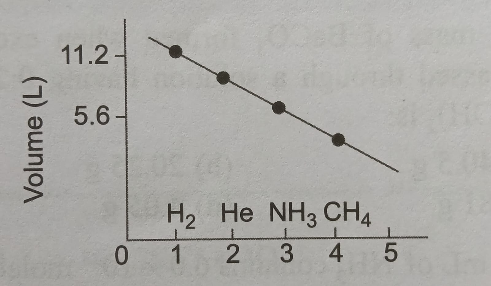

MCQs (Q.101 – Q.117)
101. Which has maximum number of molecules?
(a) 1.7 g NH₃
(b) 2 g He
(c) 4.6 g NO₂
(d) 3.2 g SO₂
103. Total number of protons in 10 g CaCO₃:
(a) 3.01×10²⁴
(b) 4.06×10²⁴
(c) 30.1×10²⁴
(d) 3.01×10²³
104. Volume of O₂ at STP to convert 1.5 mol S to SO₂:
(a) 33.6
(b) 43.6
(c) 11.2
(d) 23.6
105. Equivalent weight of K₂Cr₂O₇ (mol. wt. 294) in acidic medium:
(a) 19
(b) 49
(c) 99
(d) 294
106. Moles of NaHCO₃ formed:
(a) 0.010
(b) 0.2
(c) 0.4
(d) 10
107. When 3 g H₂ reacts with 29 g O₂, water formed:
(a) 9 g
(b) 18 g
(c) 36 g
(d) 27 g
108. Moles in 2.5 L of 0.2 M H₂SO₄:
(a) 0.25
(b) 0.5
(c) 0.75
(d) 0.2
109. Grams of dibasic acid (mol wt 200) for 0.1 N in 100 mL:
(a) 1 g
(b) 1.5 g
(c) 0.5 g
(d) 20 g
110. X g CaCO₃ burnt gives 28 g residue. X =
(a) 50
(b) 100
(c) 150
(d) 200
111. One mole acidified K₂Cr₂O₇ liberates ___ moles I₂:
(a) 2
(b) 3
(c) 6
(d) 7
112. Basicity of organic acid (silver salt data):
(a) 2
(b) 3
(c) 4
(d) 5
113. Equivalent weight of KMnO₄ (mol wt 158) in acidic medium:
(a) 158
(b) 31.6
(c) 39.5
(d) 79
114. Moles of Na₂CO₃ formed from 0.2 mol NaHCO₃:
(a) 0.1
(b) 0.2
(c) 0.05
(d) 0.025
115. Minimum molecular mass of protein:
(a) 34 u
(b) 3400 u
(c) 34,000 u
(d) 3,400,000 u
116. Valence electrons in 0.53 g Na₂CO₃:
(a) 3.01×10²³
(b) 1.2046×10²³
(c) 12.046×10²³
(d) 6.023×10²³
117. Given below is the graphical representation of volumes occupied by several gases at STP.Find out which gas/gases is/are not placed at the correct position

(a) He, NH₃
(b) CH₄, He
(c) NH₃, H₂
(d) NH₃, CH₄
Answer Key
101. (a)
103. (a)
104. (a)
105. (b)
106. (a)
107. (d)
108. (b)
109. (a)
110. (a)
111. (b)
112. (a)
113. (b)
114. (a)
115. (c)
116. (b)
117. (a)